Free
computer Tutorials
|
Free
computer Tutorials
|
|
 home home |
|
|||||
Microsoft Word 2007 to 2010Create a LetterheadIn this section, you'll create a letterhead and turn it into a template so that you can use it anytime you want.
What is a Letterhead?A letterhead is some form of design for your stationary. Typically, a name and address would be included in a letterhead, along with contact details. A logo is often incorporated into a letterhead. The one you're going to be designing is this one: To design a letterhead like the one above, three elements were used: AutoShapes, a Textbox and a Line. To make a start, click the Office button (or the File tab in Word 2010) and select New > Blank Document. Press the enter key on your keyboard. Keep it held down and let go about halfway down the blank page, thus giving yourself some working space. We'll add the pyramid logo first. The pyramid is one of the built-in clip art pieces. To add it, select
the Insert tab from the Word ribbon. Click Clip Art on
the Illustrations panel. From the Search in menu on the right,
select the AutoShapes item in Word 2007: 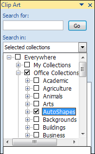 Then click the Go button to display the AutoShapes. You should see the pyramid shape amongst them: 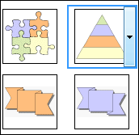 In Word 2010 select the Illustration category. The pyramid is about a third of the way down. Click on the pyramid with your left mouse button. The shape will then be inserted onto your blank page. However, it will be a bit big. Use the sizing handles to resize it. Or click the Format tab at the top of Word. From the Size panel, enter 3 cm for the height and 4.5 cm for the width. (In inches the figures are 1.18 and 1.77.) Hold your left mouse button down on the shape and drag it towards the middle somewhere (we'll reposition it later). Deselect your shape by clicking anywhere else on the page. You should have no sizing handles around your pyramid before continuing.
Text BoxesWe'll add the address to a text box, that way it can be moved around the page. To add a text box to your page, make sure your Insert tab is select at the top of Word. Locate the Text panel and click the Text Box item: 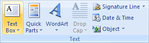 When you click the Text item, you'll see a menu appear. This one: 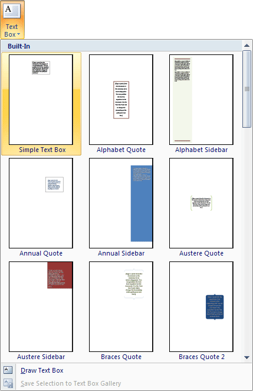 Select the first item, Simple Text Box. When you click on a text box, it should appear on the page with some default text inside it: 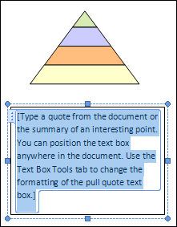 Delete the default text and type an address in it: 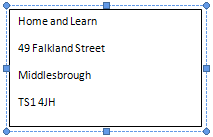 One thing you may notice is that there is too much space between each line of text. To reduce the space, highlight all of the address. Now right click on the highlighted area. From menu that appears, select Paragraph: 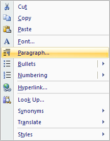 You will then see a dialogue box appear: From the Paragraph dialogue box, select the option at the bottom "Don't add space between paragraphs of the same style": 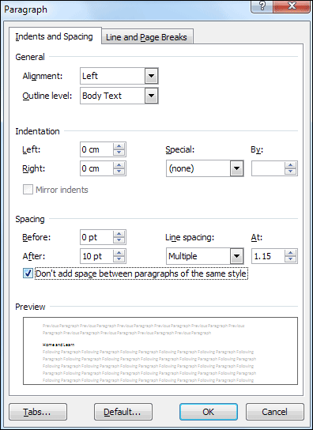 Click OK when you have a check mark in the box. You will then find that the line space in your text box will be reduced. With the text still selected, centre it in the normal way (from the Home menu). Your page should now look like this: 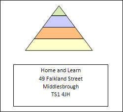 We now need to get rid of the lines around the text box. Click inside of your text box to select it. If your Format menu at the top of Word is not showing, click on that to select it as well. From the Format menu locate the Text Box Styles panel (Word 2010 will say Shape Styles instead). Then click the Shape Outline item: 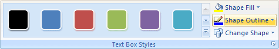 From the menu that appears, click on No Outline: 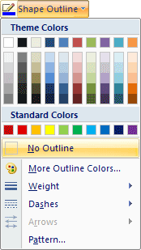 The lines around your text box will then disappear. (The text box itself actually has a white background. To get rid of it, or choose a different colour, you would do so from the Shape Fill menu. Select No Fill for a transparent background, or select a colour from the list.) Click inside of your text box to select it, if it's not already selected. Now click on any of the sizing handles. Once you do that, you be able drag your text box into position below your pyramid. You can also hold down the CTRL key on your keyboard, and then press an arrow key to move your text box around. Once your text box is in position, your page should look something like this: 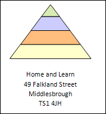 To add the line, select either your pyramid or text box. The Format menu should appear again. Locate the Insert Shapes panel on the left, and the diagonal line: 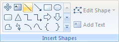 Hold down the CTRL key on your keyboard. Now draw out a straight vertical line on your page. (Holding down the CTRL key constrains the line.) 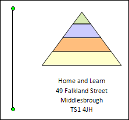 Make your line about the same height as the text box and pyramid combined. If your line is too big or too small, hold down your left mouse button on one of the green circles at the top and bottom of the line. Keep the mouse button held down and drag to resize your line. (If you can't see the two circles on the end, click anywhere on your line to select it.) You can also use the Size panel on the Format menu to change the height of your line. Enter a figure of 5.8 cm (2.28 inches) for the height, and leave the width on 0. With your line still selected, use the CTRL and arrow keys to move your line closer your text box. To change the colour of the line, use the Shape Outline menu again. Also on the Shape Outline menu is a Weight item. Click on this to see the different line sizes you can use. In the image below we've chosen a weight of 1½ points: 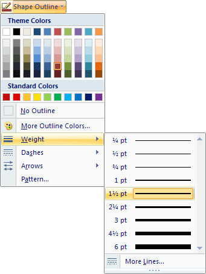 When you've chosen a colour and weight for your line, your page should look something like ours below: 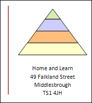 At the moment, all three items are separate. So click each one to select them (hold your CTRL key down while left clicking the objects). For the text box, you need to click inside of it, then click the sizing handles. It's best if you select the text box first. Once you've selected all three objects, group them together like you did in the last section (From the Format > Arrange menu.)
In the next lesson, you'll learn how to add columns to a page. You'll then add the logo to the right column. Adding Columns to a Word Document --> <--Back to the Word Contents Page View all our Home Study Computer Courses
|
||||||
|